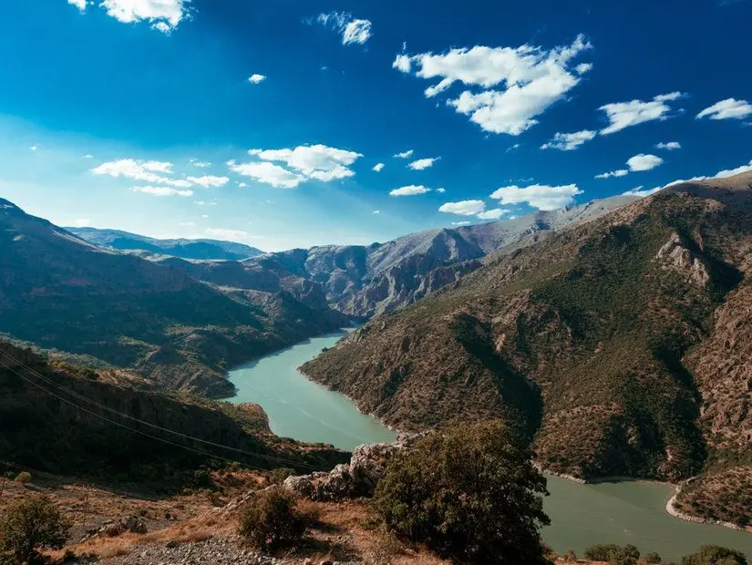
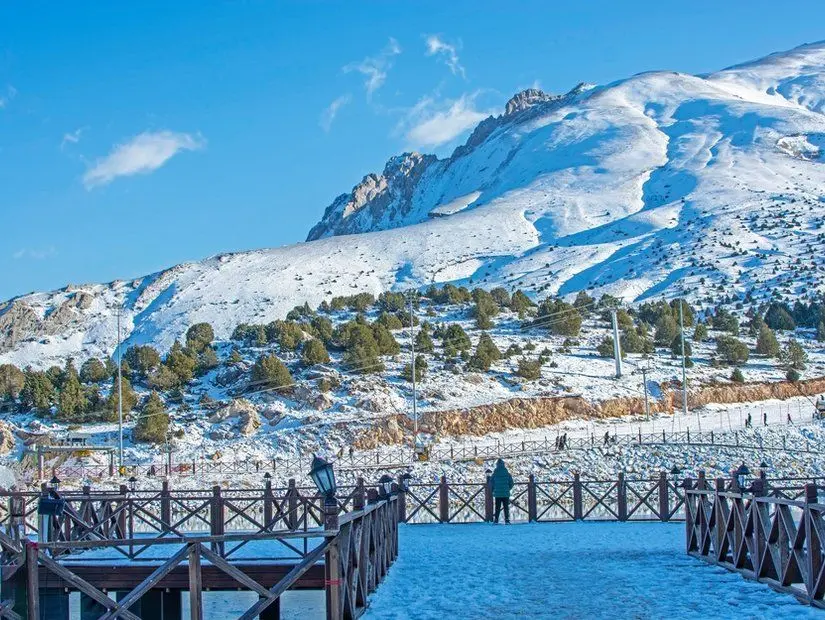
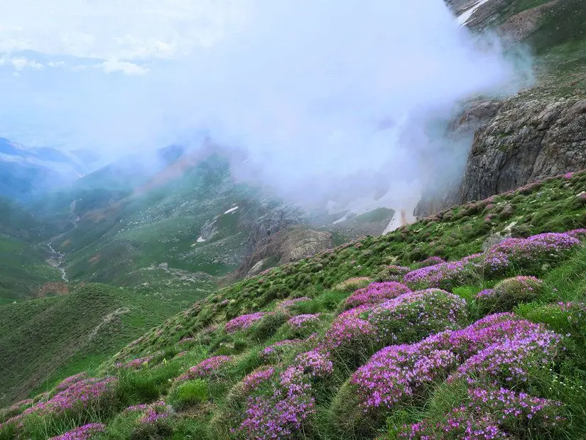
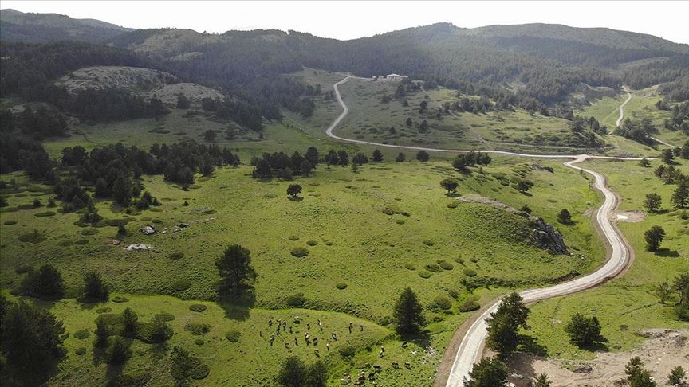
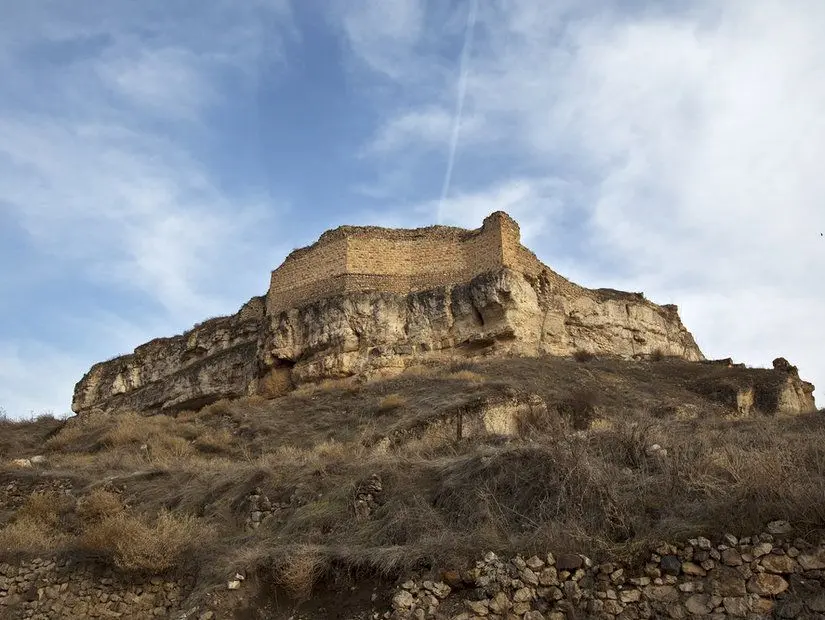
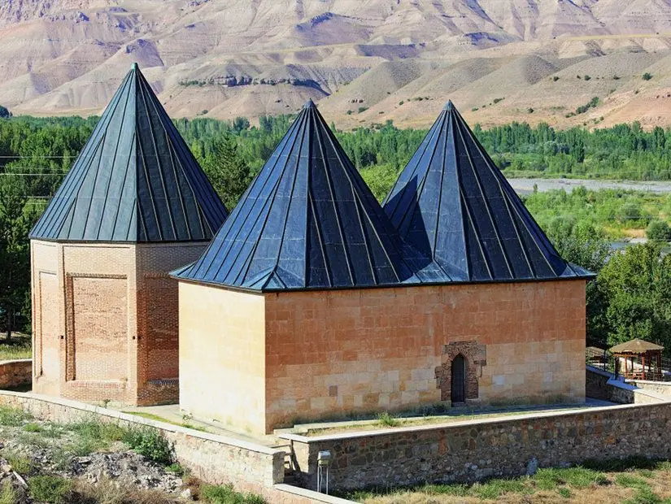
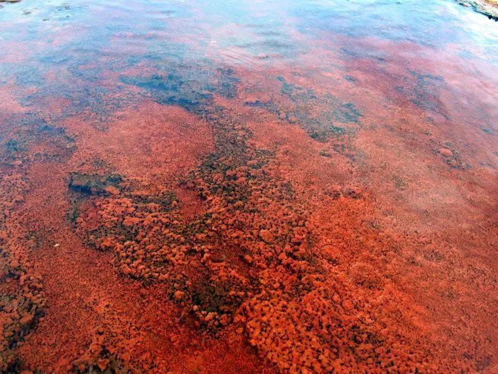

Karanlık Kanyon
Sadece Türkiye'nin değil, dünyanın da en büyük kanyonları arasında olan devasa Karanlık Kanyon, her doğa tutkununun kesinlikle görmesi gereken tabiat harikalarımızdan biri. Kemaliye ilçesi sınırlarında yer alan ve yılın her mevsimi kaya tırmanma, dağcılık, trekking ve kampçılık gibi etkinliklerin gerçekleştirildiği Karanlık Kanyon, ismini de koyu renkli yüzlerce metrelik duvarlarından alıyor. Sarp uçurumlarında kuş bakışı doğa manzaraları izleyebileceğiniz, yaz aylarında düzenlenen rafting ve kano etkinlikleriyle heyecan dolu bir gün yaşayabileceğiniz Karanlık Kanyon'da binlerce yıllık mağaraları da keşfe çıkabilir veya yaz aylarında serin havada kamp yaparak birkaç gün geçirebilirsiniz.
Ekşisu Mesire Alanı

Erzincan'ın hem hafta sonları hem de yaz aylarında en sevilen doğaya kaçış noktalarından biri olan Ekşisu Mesire Alanı, doğanın içinde dinlendirici bir gün geçirmek için mutlaka uğramanız gereken yerler arasında. 100.000 metrekarelik büyük bir yeşil alanı kapsayan ve şehir merkezine sadece 11 kilometre uzaklıkta yer alan mesire alanı, ismini çok sevilen doğal maden sularından oluyor. Etkileyici göletleri, süs havuzları, çam ormanları içindeki mesire alanları, çocuk oyun alanları, spor sahaları, yürüyüş ve bisiklet yolları gibi olanaklarla keyifli bir gün geçirebileceğiniz Ekşisu Mesire Alanı’nın özellikle bağırsak ve karaciğer sorunlarına iyi geldiği bilinen maden sularında tadarak şifa da bulabilirsiniz.
Ergan Kayak Merkezi
Sadece Erzincan'ın değil, bölgenin de en sevilen kış tatili merkezlerinden biri haline gelen Ergan Kayak Merkezi, şehre yaklaşık 17 kilometre gibi oldukça yakın bir konumda hizmet veriyor. Ergan Dağı eteklerinde yer alan kayak merkezi; 2662, 2450 ve 1800 metre uzunluklardaki kayak pistleri, teleferik, telesiyej gibi olanaklarıyla her yıl binlerce insanı misafir ediyor.
22 gondoluyla büyüleyici kış manzaraları eşliğinde dağ zirvelerine ulaşabileceğiniz, her yaş grubu için kayak eğitimleri alabileceğiniz Ergan Kayak Merkezi’nde kar motoru ve kar üzerinde bot gezileri gibi pek çok eğlenceli etkinliğe katılarak da çocuklarınızla eğlenceli zaman geçirmeniz mümkün. Yöresel lezzetler tadabileceğiniz restoranlar, kafeler, kayak ekipmanları kiralayabileceğiniz işletmeler ve konaklama tesislerinin de hizmet verdiği Ergan Kayak Merkezi’ni hem minibüslerle hem de günübirlik turlarla gidebilir, Erzincan'da bembeyaz kar manzaraları arasında güzel bir gün geçirebilirsiniz.
Munzur Dağları
Erzincan ile Tunceli şehirleri arasında yer alan ve Toros Dağları'nın bir uzantısı olan Munzur Dağları, bölgenin en popüler doğa sporu merkezlerinden biri. 3000 metreyi aşan yükseklerdeki zirvelerinde benzersiz karlı dağ manzaralarına şahit olabileceğiniz gezinizde dünyada sadece Munzur Dağları’nda bulunan onlarca endemik bitki türü ve kelebeği de yakından görebilirsiniz.
Meşe ormanları arasında düzenlenen yürüyüş parkurlarında trekking turlarına katılabileceğiniz Munzur Dağları’nda dağcılık, kaya tırmanma, dağ bisikleti ve kampçılık gibi pek çok aktivitelerle de el değmemiş doğal güzellikler arasında unutulmaz günler geçirebilirsiniz. Akarsuların açtığı vadiler, yemyeşil çayırlar, sık ormanlar, irili ufaklı şelaleler ve derelerle süslü Munzur Dağları, her mevsim fotoğrafçıların da en sık uğradığı yerler arasında.
Dumanlı Yaylası
Erzincan’ın en çok ziyaret edilen yerlerinden biri olan Dumanlı Yaylası, gelişmiş turizm olanaklarıyla yaz aylarında binlerce insanı misafir ediyor. Yeşil cennet olarak adlandırılan ve Refahiye ilçesinde Erzincan merkezine yaklaşık 1 saat uzaklıkta yer alan Dumanlı Yaylası, el değmemiş büyüleyici güzelliğiyle 2017 yılında tabiat park ilan edilerek koruma altına alındı. Sarıçam ağaçları altında sıralanan mesire alanları, zorluk derecesine göre düzenlenmiş yürüyüş parkurları, çocuk oyun alanları, dağ eteklerinde sıralanan ahşap evlerle süslü Dumanlı Yaylası, büyüleyici doğa fotoğrafları çekebileceğiniz seyir teraslarıyla da dinlendirici bir gün geçirmek için ideal.
9000 hektara yakın geniş bir alanı kapsayan yaylada bungalov ve yayla evlerinde konaklayabilir, donanımlı kamp ve karavan alanları bulabilir; özellikle sıcak yaz günlerinde oksijen seviyesi yüksek tertemiz havada organik ürünlerle hazırlanan kahvaltılar ve geleneksel yayla yemekleri tadarak güzel bir gün yaşayabilirsiniz.
Aygır Gölü

Çevresi el değmemiş doğal güzelliklerle çevrili Erzincan'da çok ziyaret edilen tabiat cennetlerinden biri de şehre sadece 45 dakikalık uzaklıkta yer alan büyüleyici Aygır Gölü. Türkiye'nin en büyük krater göllerinden biri olan ve yaz aylarında kamp yapmak için en çok tercih edilen yerlerin başında gelen Aygır Gölü’nün masmavi sularında bot, kano ve sandallarla gezilere de çıkabilirsiniz.
Pek çok antik efsaneye konu olan Keşiş Dağı eteklerinde uzanan Aygır Gölü’nün çevresinde tertemiz havada yürüyüşler yaparak fotoğraflar çekebilir; sessiz ve huzurlu atmosferini yıl boyu koruyan gölde olta balıkçılığı veya piknik yaparak yılın bütün yorgunluğunu atabilirsiniz. Karlı dağlar ve bembeyaz bulutlarla kartpostal güzelliğinde manzaralar izleyeceğiniz Aygır Gölü, hem fotoğraf çekmeyi sevenler hem de doğa tutkunlarının ilk uğraması gereken Erzincan doğal güzelliklerinden biri.
Kemah Kalesi
Erzincan'a yaklaşık 50 kilometre uzaklıkta yer alan ve Anadolu'nun en eski kalelerinden biri olmasıyla ünlenen Kemah Kalesi, tarihe ve mimariye meraklı olanların görmesi gereken etkileyici yapılardan biri. Devasa bir kaya kütlesi üzerine, Hitit-Urartu dönemlerinde inşa edilen görkemli kalenin bulunduğu alanda M.Ö. 4000 yıllarına kadar yerleşim olduğu tahmin ediliyor. Cilalı Taş Devri’nden kalan tarihi eserlerin bulunduğu Kemah Kalesi, Hititlerden Romalılara kadar pek çok medeniyet tarafından kullanılmış.
Yavuz Sultan Selim döneminde Osmanlı topraklarına geçen ve çeşitli eklemeler yapılan Kemah Kalesi, Yavuz Sultan Selim'in bizzat fethettiği kalelerden biri olmasıyla da özel bir tarihi öneme sahip. Yüzlerce yıldır ayakta kalmış devasa sularını ve iç kale bölümlerini keşfe çıkabileceğiniz devasa kalenin bulunduğu alandan da muhteşem panoramik fotoğraflar çekebilirsiniz.
Sultan Melik Türbesi (Melik Gazi Türbesi)
Erzincan ve çevresinde uzun süre hüküm süren Mengücek Beyliği'nin kurucusu olan Melik Gazi için tasarlanan Sultan Melik Türbesi, Erzincan'ın Kemah ilçesinde Fırat Nehri kıyısında tablo güzelliğinde bir manzara sunuyor. Kesme taşlarla inşa edilmiş 2 katlı yapısı ve 5 silindir siyah kubbesiyle dikkat çeken tarihi türbenin 1071 ile 1228 yılları arasında yapıldığı tahmin ediliyor. 1991 yılında aslına uygun olarak restore edilen Sultan Melik Türbesi’ni ziyaret ettikten sonra Fırat Nehri'nde panoramik manzaralarını da inceleyebilirsiniz.
Kemah Soğuksular Aile Piknik Alanı

Sıcak yaz günlerinde hem doğanın içinde hafta sonu kahvaltıları yapmak hem de çocuklarınızla eğlenceli bir gün geçirmek için çok sevilen bir gezi alanı olan Kemah Soğuksular Aile Piknik Alanı’na uğrayabilirsiniz. Erzincan'a sadece 45 dakika uzaklıktaki piknik alanı, yaz aylarında bile buz gibi akan derelerinden alıyor.
Dere kenarında hizmet veren kır bahçeleri, yöresel yemekler tadabileceğiniz restoranlar, çay bahçeleri, çocuk oyun alanları ve mesire alanlarıyla yaz aylarında ailelerle dolan Kemah Soğuksular Aile Piknik Alanı’nın çevresinde bungalovlar ve orman köşkleri gibi konaklama olanakları da bulabilirsiniz. Donanımlı kamp alanlarıyla Erzincan'da kamp yapmak için de en çok tercih edilen yerlerin başında gelen Kemah Soğuksular’ın çevresindeki yürüyüş parkurlarında temiz havada spor yapabilir, balık bolluğuna sahip derelerde olta balıkçılığı yaparak dinlendirici bir gün yaşayabilirsiniz
Otlukbeli Gölü
Erzincan’ın görülmesi gereken en ünlü doğal güzelliklerinden biri de 1994 yılında el değmemiş büyüleyici güzelliğinden dolayı doğal sit alanı olarak koruma altına alınan Otlukbeli Gölü. Yılın her mevsimi farklı bir doğa güzelliğine şahit olabileceğiniz, özellikle ilkbahar ve sonbahar aylarında yeşilin her tonunu bir arada görebileceğiniz büyüleyici göl, 7500 metrekarelik geniş bir alanı kapsıyor ve yaklaşık 20 metre derinliğinde.
Dünyadaki tek traverten set gölü olmasıyla insanları kendine çeken Otlukbeli Gölü, deniz seviyesinden 1855 metre yüksekte olduğu için sıcak yaz aylarında bile serin kalan tertemiz havasıyla da ilgi görüyor. Demir bakımından zengin kaynak sularından dolayı kızıl renk alan travertenleriyle ünlü Otlukbeli Gölü, dünyada sadece burada görebileceğiniz çarpıcı bir manzarayı size sunacak. Fotoğraf safarileri, doğa gezileri ve kampçılık gibi pek çok etkinliğin ana merkezlerinden biri olan Otlukbeli Gölü, çevresindeki fay kırıklarından fışkıran şifalı kaynak sularından dolayı sağlık amaçlı da her yıl binlerce kişi tarafından ziyaret ediliyor.